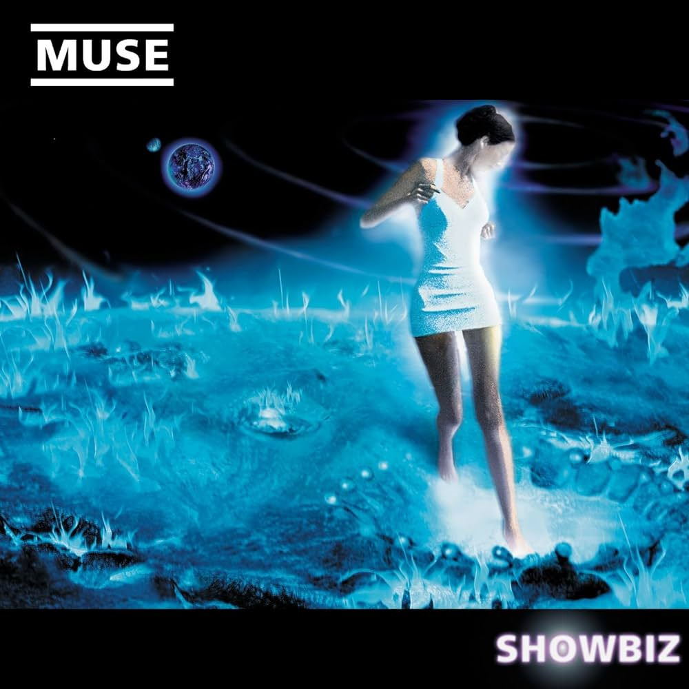

Showbiz adalah album debut Muse, yang direkam antara tahun 1998
dan 1999. Lagu-lagunya sendiri menyertakan beberapa lagu lama
dalam repertoar Muse, sejak tahun 1996. Semua lagu di album
ini ditulis pada tahun 1997. Ini termasuk di antara " lima
puluh atau lebih" yang ditulis Muse sebelum memasuki studio.
Band ini memilih yang mereka anggap paling tidak progresif
untuk dijadikan Showbiz.
Origin of Symmetry
Origin of Symmetry muncul pertama kali melalui perubahan yang
dialami Muse selama tur intensif mereka dalam promosi Showbiz,
dengan banyak materi yang ditulis selama tur. Namun, album
ini lebih berorientasi riff dan sedikit lebih gelap dari Showbiz,
berisi beberapa lagu yang menggunakan piano atau organ. Origin
of Symmetry dimaksudkan sebagai album bergaya rock yang lebih
progresif, dengan gaya vokal yang berbeda dari Showbiz. Ambisi
dibalik album ini adalah untuk menunjukkan elemen hard rock dan
eksentrik dari band, yang mereka rasa belum pernah terlihat
selama ini. Ini termasuk membawa kembali banyak musik yang
"disaring" dari Showbiz. Bass di album ini juga lebih menonjol
dan terdistorsi. Beberapa lagu di album ini mendapat pengaruh
dari hubungan anggota band yang menderita akibat tur mereka.
Absolution
Absolution adalah album ketiga Muse dan dirilis di seluruh dunia
pada bulan September 2003. Lagu-lagu yang ditampilkan di
Absolution ditulis saat Muse melakukan tur untuk mendukung
Origin of Symmetry dan Hullabaloo, dengan beberapa lagu seperti
"Fury" yang berasal dari awal tahun 2000. Seperti sebelumnya
Album Muse, Origin of Symmetry, Absolution dipengaruhi oleh
komposer klasik seperti Sergei Rachmaninov dan Samuel Barber,
sementara "Endlessness" memperkenalkan suara yang lebih elektronik
dengan lagu-lagu seperti "The Small Print" dan "Thoughts of a
Dying Atheist" menjadi gitar- dipimpin.
Black Holes and Revelations
Lubang Hitam dan Wahyu adalah album studio keempat Muse, dirilis
tiga tahun setelah album sebelumnya Absolution, pada Juli 2006.
Album ini kurang berorientasi klasik dibandingkan Origin of
Symmetry and Absolution sambil memperkenalkan pengaruh baru
termasuk jazz, soul, dan R&B. Tema umum dari album ini berpusat
pada politik yang berorientasi distopia/kleptokratis, disertai
dengan perang dan tentang siklus dan hal-hal besar yang terjadi:
"Ada sebuah tema di album ini, yang merupakan hubungan dengan
siklus sejarah di mana ketegangan terbentuk. naik dan kemudian
dilepaskan, entah itu bencana besar seperti perang nuklir, atau
alien jatuh dan itu brilian. Tapi pasti ada perasaan bahwa
sesuatu yang besar akan terjadi." dan "Beberapa lagu secara
langsung diinformasikan oleh hal-hal yang sedang terjadi saat
ini."
The Resistance
Album studio kelima Muse, The Resistance, dirilis pada 14
September 2009. Seperti album Muse sebelumnya, album ini
mengambil berbagai genre dan pengaruh, termasuk glam rock,
R&B, disko, dan klasik. Perlawanan melihat kembalinya
instrumentasi yang sebelumnya digunakan Asal Simetri,
termasuk organ gereja (Seleksi Tidak Alami) dan kuku kaki
llama (Amerika Serikat Eurasia). Matthew Bellamy merangkum
album ini sebagai "penekanan pada ritme dan R&B kontemporer
pada awalnya. Kemudian menjadi epik dan aneh, kemudian
menjadi musik klasik kontemporer."
The 2nd Law
Chris mengatakan dalam sebuah wawancara baru-baru ini bahwa
band ini ingin melakukan sesuatu yang "sangat berbeda" di
album berikutnya. Bassist itu memberi tahu Kerrang! majalah
yang rasanya seperti mereka sedang "menarik garis" di bawah
masa lalu mereka dan sangat ingin menerima ide-ide baru.
Dia berkata: "[Band] merasa seperti kami menarik garis pada
periode tertentu dari apa yang telah kami lakukan dalam karir
kami. Rasanya seperti inilah waktunya untuk maju dan melakukan
sesuatu yang berbeda secara radikal." Namun, dia juga mengakui
bahwa tidak selalu mudah untuk maju dan memajukan musik mereka,
menambahkan: "Tapi kemudian Anda bisa masuk ke studio dan
kembali ke hal yang Anda sukai. Anda masuk ke studio dan ada
sebuah proses alami dan Anda harus melihat ke mana sebuah lagu
akan membawa Anda."
Drones
Drones masih merupakan album yang sangat beragam. Satu-satunya
perbedaan, dibandingkan dengan karya band sebelumnya, adalah
adanya kembalinya lebih banyak gitar, bass, dan drum, yang
mengambil gaya album kembali ke Absolution dan Black Holes &
Revelations, dengan beberapa elemen synth dan elektronik.
masih di atasnya. Dengan Mutt Lange sebagai produser mereka,
ketiganya dapat menghabiskan lebih banyak waktu di luar ruang
kontrol dan bekerja sama dalam lingkungan live setelah membuat
sebagian besar album mereka sebelumnya, The 2nd Law sendiri,
di ruang kontrol, di belakang synth yang berbeda, oleh karena
itu tidak bisa menghabiskan banyak waktu bersama di ruang tamu.
Simulation Theory
Album studio kedelapan Muse, yang dijuluki oleh Dom sebagai album
'I Don't Wanna Ruin It For Everyone', merupakan lanjutan dari
Drones, akan dirilis pada November 2018. Album ini mengangkat
tema realitas virtual, realitas simulasi, dan tentang 'ide
fantasi menjadi nyata', seperti yang disebutkan oleh Matt dalam
sebuah wawancara, ia juga menyebutkan bahwa alasan lain untuk
menulis album ini adalah karena 'simulasi menjadi sesuatu yang
nyata'. bagian dari kehidupan kita sehari-hari.'.
Will of the People
Tujuan dari album ini, sejak idenya muncul pada akhir tahun 2019,
adalah untuk mengeksplorasi peristiwa terkini di dunia. Karena
banyak hal telah terjadi selama tahun-tahun ini, secara tematis,
film ini mengeksplorasi segala hal mulai dari protes Black Lives
Matter hingga pandemi Covid-19 dan lockdown, hingga kerusuhan
Capitol tahun 2021, dan banyak lagi. Menurut Muse, "Kehendak
Rakyat diciptakan di Los Angeles dan London dan dipengaruhi
oleh meningkatnya ketidakpastian dan ketidakstabilan di dunia.
Pandemi, perang baru di Eropa, protes & kerusuhan besar-besaran,
upaya pemberontakan, demokrasi Barat yang goyah, kebangkitan
otoritarianisme, kebakaran hutan, dan bencana alam serta
destabilisasi tatanan global semuanya mempengaruhi Kehendak
Rakyat. Ini merupakan masa yang mengkhawatirkan dan menakutkan
bagi kita semua sebagai kerajaan Barat dan alam, yang telah
lama kita huni. benar-benar terancam. Album ini adalah navigasi
pribadi melalui ketakutan tersebut dan persiapan untuk apa yang
akan terjadi selanjutnya."
 Origin of Symmetry muncul pertama kali melalui perubahan yang
dialami Muse selama tur intensif mereka dalam promosi Showbiz,
dengan banyak materi yang ditulis selama tur. Namun, album
ini lebih berorientasi riff dan sedikit lebih gelap dari Showbiz,
berisi beberapa lagu yang menggunakan piano atau organ. Origin
of Symmetry dimaksudkan sebagai album bergaya rock yang lebih
progresif, dengan gaya vokal yang berbeda dari Showbiz. Ambisi
dibalik album ini adalah untuk menunjukkan elemen hard rock dan
eksentrik dari band, yang mereka rasa belum pernah terlihat
selama ini. Ini termasuk membawa kembali banyak musik yang
"disaring" dari Showbiz. Bass di album ini juga lebih menonjol
dan terdistorsi. Beberapa lagu di album ini mendapat pengaruh
dari hubungan anggota band yang menderita akibat tur mereka.
Origin of Symmetry muncul pertama kali melalui perubahan yang
dialami Muse selama tur intensif mereka dalam promosi Showbiz,
dengan banyak materi yang ditulis selama tur. Namun, album
ini lebih berorientasi riff dan sedikit lebih gelap dari Showbiz,
berisi beberapa lagu yang menggunakan piano atau organ. Origin
of Symmetry dimaksudkan sebagai album bergaya rock yang lebih
progresif, dengan gaya vokal yang berbeda dari Showbiz. Ambisi
dibalik album ini adalah untuk menunjukkan elemen hard rock dan
eksentrik dari band, yang mereka rasa belum pernah terlihat
selama ini. Ini termasuk membawa kembali banyak musik yang
"disaring" dari Showbiz. Bass di album ini juga lebih menonjol
dan terdistorsi. Beberapa lagu di album ini mendapat pengaruh
dari hubungan anggota band yang menderita akibat tur mereka.
 Absolution adalah album ketiga Muse dan dirilis di seluruh dunia
pada bulan September 2003. Lagu-lagu yang ditampilkan di
Absolution ditulis saat Muse melakukan tur untuk mendukung
Origin of Symmetry dan Hullabaloo, dengan beberapa lagu seperti
"Fury" yang berasal dari awal tahun 2000. Seperti sebelumnya
Album Muse, Origin of Symmetry, Absolution dipengaruhi oleh
komposer klasik seperti Sergei Rachmaninov dan Samuel Barber,
sementara "Endlessness" memperkenalkan suara yang lebih elektronik
dengan lagu-lagu seperti "The Small Print" dan "Thoughts of a
Dying Atheist" menjadi gitar- dipimpin.
Absolution adalah album ketiga Muse dan dirilis di seluruh dunia
pada bulan September 2003. Lagu-lagu yang ditampilkan di
Absolution ditulis saat Muse melakukan tur untuk mendukung
Origin of Symmetry dan Hullabaloo, dengan beberapa lagu seperti
"Fury" yang berasal dari awal tahun 2000. Seperti sebelumnya
Album Muse, Origin of Symmetry, Absolution dipengaruhi oleh
komposer klasik seperti Sergei Rachmaninov dan Samuel Barber,
sementara "Endlessness" memperkenalkan suara yang lebih elektronik
dengan lagu-lagu seperti "The Small Print" dan "Thoughts of a
Dying Atheist" menjadi gitar- dipimpin.